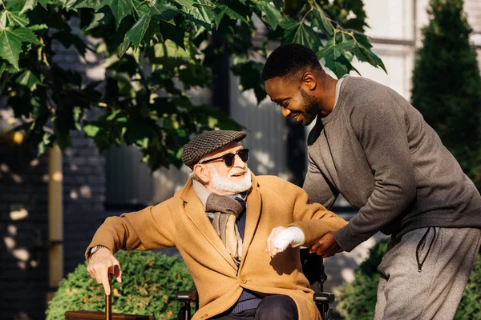

Acerca de nosotros

Nuestra historia
BRITA nació como una iniciativa comunitaria de un pequeño grupo de jóvenes comprometidos con
el bienestar social. Durante nuestras primeras actividades, identificamos que muchas familias
de nuestra región vivían en condiciones precarias, con necesidades básicas insatisfechas.
A partir de ese momento decidimos unir esfuerzos para crear un espacio solidario que brinde
apoyo, acompañamiento y esperanza a quienes más lo necesitan.
Misión
Nuestra misión es ofrecer ayuda integral a comunidades vulnerables, promoviendo la dignidad
humana a través de la entrega de recursos básicos, programas de educación y espacios de apoyo
social que contribuyan al mejoramiento de la calidad de vida.
Visión
En el año 2030, BRITA será reconocida como un referente de impacto social en Colombia,
consolidando una red solidaria capaz de transformar vidas y fomentar una cultura de ayuda
mutua en diferentes comunidades del país.
Objetivos
- Brindar alimentación, ropa y medicamentos a personas en situación de necesidad.
- Implementar programas de capacitación en oficios y habilidades productivas.
- Fomentar valores de solidaridad y trabajo comunitario.
- Establecer alianzas con instituciones públicas y privadas para ampliar el alcance de nuestras ayudas.
Nuestras obras más destacadas
En BRITA creemos que cada acción solidaria marca la diferencia. A continuación,
presentamos cinco situaciones en las que hemos tenido la oportunidad de ayudar
a las personas y familias que más lo necesitan:
1. Entrega de mercados a familias vulnerables
Durante la temporada de crisis económica, BRITA organizó una campaña de recolección
de alimentos. Gracias a la solidaridad de nuestros donantes, logramos entregar más
de 50 mercados a familias en condiciones de escasez.
2. Ropa y abrigo para personas en situación de calle
En una jornada comunitaria, recolectamos ropa en buen estado que fue entregada a
más de 30 personas en situación de calle, especialmente durante la temporada de frío.
3. Jornadas de acompañamiento escolar
Nuestros voluntarios han brindado apoyo escolar a niños y jóvenes con dificultades
académicas, promoviendo la educación como un pilar fundamental para superar la pobreza.
4. Apoyo a adultos mayores

BRITA ha realizado visitas a hogares de adultos mayores, compartiendo alimentos,
medicinas y momentos de compañía, reconociendo el valor de quienes han construido
nuestra sociedad.
5. Campañas de salud y bienestar
Con el apoyo de profesionales voluntarios, organizamos jornadas de atención básica
en salud y charlas de prevención, beneficiando a familias sin acceso a servicios médicos.